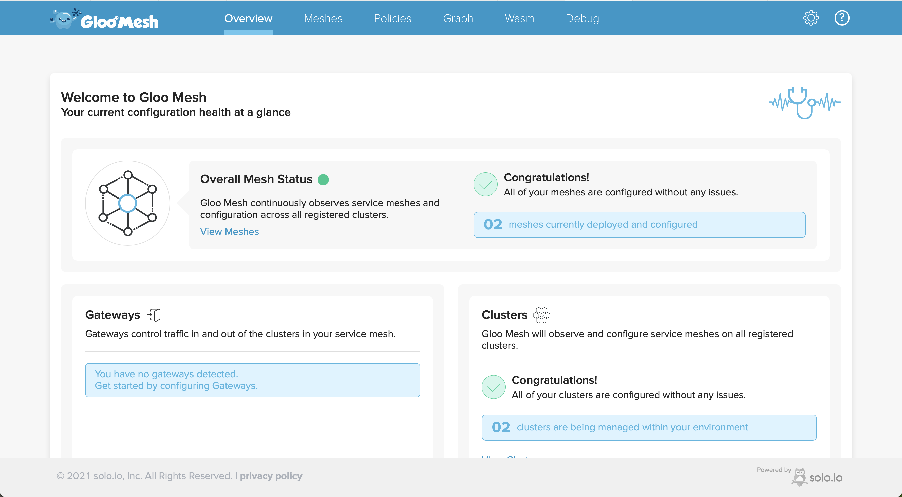

Environment Setup
At the end of this chapter you would have,
- Three Kubernetes Clusters on AWS,GCP and Civo
- The VM on local environment
- Installed Gloo Mesh Enterprise
Demo Environment¶
The demo requires us to have three Kubernetes clusters and one Virtual Machine. The following tables shows the environment to component matrix.
| Components | GCP | AWS | CIVO | VM |
|---|---|---|---|---|
| Gloo Mesh Cluster Name | cluster1 | cluster2 | mgmt | |
| Gloo Mesh Management | ||||
| Gloo Mesh Agent | ||||
| Kubernetes | ||||
| Kubernetes Context Name | gke | eks | civo | |
| Istio | ||||
| Blue-Green-Canary Service |
Navigate to the $TUTORIAL_HOME,
cd $TUTORIAL_HOME
Ansible Variables File¶
Create the Ansible variables file,
make encrypt-vars
The command will create a file .local.vars.yml under $TUTORIAL_HOME.
Important
As we will having sensitive keys in the Ansible variables, the file is by default encrypted and the encryption key is stored in the $TUTORIAL_HOME/.password_file
The following table shows the ansible variables used by the demo, please make sure to update the values to suit your settings. The values can be edit using the command,
make edit-vars
| Variable | Description | Default |
|---|---|---|
gcp_vpc_name |
The name of the VPC that will be created. Same VPC will be used with GKE Cluster | kameshs-k8s-vpc |
gcp_vpn_name |
The name of the VPN that will be created | kameshs-site-to-site-vpn |
gcp_cred_file |
The SA JSON file to be copied to VM | “$HOME/.config/gcloud/credentials” from the Ansible controller machine |
gcp_project |
The GCP project to use | |
gcp_region |
The GCP region to use | asia-south-1 |
aws_access_key_id |
The AWS Acess Key | |
aws_secret_access_key |
The AWS Secret Key | |
aws_region |
The AWS Region to use | ap-south-1 |
eks_cluster_name |
The AWS EKS cluster name | kameshs-gloo-demos |
aws_vpc_name |
The AWS VPC name. The same VPC will be used with EKS cluster | kameshs-gloo-demos |
civo_api_key |
The CIVO Cloud API Key | |
civo_k3s_cluster_name |
The CIVO Kubernetes cluster Name | gloo-mgmt |
force_app_install |
Force install application on VM | no |
clean_istio_vm_files |
Clean the generated Istio VM files | no |
k8s_context |
The kubernetes context that will be used to query Istio resources | gke |
gloo_mesh |
A dictionary of values that is used to set the values required for Gloo Mesh setup |
The gloo_mesh variable by default has the following values, refer to the component matrix above to understand what this dictionary key/value represents.
gloo_mesh:
mgmt:
cloud: civo
k8s_context: civo
install_istio: no
cluster1:
cloud: gcp
k8s_context: gke
install_istio: yes
cluster2:
cloud: aws
k8s_context: eks
install_istio: yes
VM Setup¶
We will use Vagrant to run and configure our workload VM. The Workload VM also serves as our Ansible target host to run the ansible playbooks. The same VM will be reused for running our blue-green-canary microservice.
Important
Check the vagrant file public_network and set the names in the list to map to your local interface names.
Lets bring up the the VM by running the following command,
VAGRANT_BOX=ubuntu/focal64 make vm-up
Once the VM is up you should see,
.envrcfile in the$TUTORIAL_HOMEwhich will have the following variables,
export TUTORIAL_HOME=/Users/kameshs/git/kameshsampath/gloo-bgc-demo
export ISTIO_VERSION=1.10.4
# Kubernetes context name of Gloo Mesh Cluster that will have management components installed
export MGMT=civo
# Kubernetes context names of Gloo Mesh Cluster that will have Istio workload installed, the cluster names are automatically generated during the make create-kubernetes-clusters task
export CLUSTER1=gke
export CLUSTER2=eks
export KUBECONFIG="${TUTORIAL_HOME}/.kube/config"
# AWS
export AWS_ACCESS_KEY_ID=<your AWS Access key>
export AWS_SECRET_ACCESS_KEY=<your AWS Secret Access key>
export AWS_DEFAULT_REGION=<your AWS Region>
# CIVO
export CIVO_API_KEY=<your civo API key>
# GKE
export GOOGLE_APPLICATION_CREDENTIALS=/Users/kameshs/.ssh/kameshs-solo-io-gcp.json
export CLOUDSDK_CORE_PROJECT=<your GCP Project>
export CLOUDSDK_COMPUTE_REGION=<your GCP compute region>
# just a single node cluster
export CLOUDSDK_COMPUTE_ZONE=<your GCP compute zone>
export GKE_CLUSTER_NAME=<your GKE cluster name>
# Istio
export ISTIO_HOME="$TUTORIAL_HOME/istio-1.10.4"
# VM and Istio
export VM_APP=blue-green-canary
export VM_NAMESPACE=vm-blue-green-canary
# this directory will be inside the vm
export WORK_DIR=/home/vagrant/istio-vm/files
export SERVICE_ACCOUNT=vm-blue-green-canary
export CLUSTER_NETWORK=bgc-network1
export VM_NETWORK=cluster1
export CLUSTER=cluster1
# Vagrant
export VAULT_FILE=.password_file
export VAGRANT_DEFAULT_PROVIDER=virtualbox
# tested with ubuntu/focal64, fedora/34-cloud-base
export VAGRANT_BOX=ubuntu/focal64
Tip
A vary handy tool to work with environment and variables direnv, if you have direnv installed, it will recogonize and load the variables automatically.
.kubefolder under$TUTORIAL_HOMEthis will hold the kube config files of all the kube clusters that will be created.
Kubernetes Setup¶
The cloud setup will setup the Clouds and create Kubernetes clusters on them.
make create-kube-clusters
Note
The step above will take approx 30 mins to complete depending on the cloud and region.
The successful creation of Kube clusters will have the respective kubeconfig files in $TUTORIAL_HOME/.kube. The script will also create a merged kubeconfig file $TUTORIAL_HOME/.kube/config that will have all three Kubernetes contexts merged into single file.
Verify the same by running the following command,
kubectl config get-contexts -o name
The command should show an output like,
civo
eks
gke
Verify if you are able to connect to clusters by running the following commands,
e.g. to get nodes of gke cluster,
KUBECONFIG=$TUTORIAL_HOME/.kube/config kubectl --context=gke get nodes
Tip
You can also do source $TUTORIAL_HOME/.envrc to have all the variables setup for your current terminal shell
Deploy Istio¶
As our clusters are ready, we can deploy Istio on to our workload clusters. Before we deploy lets check our gloo_mesh dictionary on the mappings,
gloo_mesh:
mgmt:
cloud: civo
k8s_context: civo
install_istio: no
cluster1:
cloud: gcp
k8s_context: gke
install_istio: yes
cluster2:
cloud: aws
k8s_context: eks
install_istio: yes
with our settings by runing the following command we should have Istio setup on $CLUSTER1 and $CLUSTER2.
Important
As we have setup the aliases via Environment variables,
$CLUSTER1=gke$CLUSTER2=aws$MGMT=civo
We will use environment variables to refer to them. Rest of the tutorial we will refer the clusters using their environment aliases. You can always check the $TUTORIAL_HOME/.envrc for these mappings.
make deploy-istio
Verify istio on $CLUSTER1(gke):
kubectl --context=$CLUSTER1 get pods,svc -n istio-system
Install Istio on $CLUSTER2(eks):
kubectl --context=$CLUSTER2 get pods,svc -n istio-system
Both the comands should return a similar output like,
NAME READY STATUS RESTARTS AGE
pod/istio-ingressgateway-7cb8f9c54-r84m6 1/1 Running 0 32m
pod/istiod-85d66d64d6-mdgz2 1/1 Running 0 32m
NAME TYPE CLUSTER-IP EXTERNAL-IP PORT(S) AGE
service/istio-ingressgateway LoadBalancer 172.18.3.206 34.93.158.36 80:32614/TCP,443:32739/TCP,15021:31949/TCP,15443:30942/TCP,15012:31256/TCP,15017:31886/TCP 32m
service/istiod ClusterIP 172.18.4.55 <none> 15010/TCP,15012/TCP,443/TCP,15014/TCP 32m
We also deployed a Gateway to istiod to enable the VM to communicate to the Istio cluster, we can query the resources using the command,
kubectl --context=$CLUSTER1 get vs,gw -n istio-system
Should show an output like,
NAME AGE
gateway.networking.istio.io/cross-network-gateway 31m
gateway.networking.istio.io/istiod-gateway 31m
NAME GATEWAYS HOSTS AGE
virtualservice.networking.istio.io/istiod-vs ["istiod-gateway"] ["istiod.istio-system.svc.cluster.local"] 31m
Ensure Environment¶
Make sure you have the Gloo Mesh Gateway Enterprise License Key before proceeding to install. Export the license key to variable,
export GLOO_MESH_GATEWAY_LICENSE_KEY=<your Gloo Mesh Gateway EE License Key>
Download meshctl¶
Download and install latest meshctl by running,
curl -sL https://run.solo.io/meshctl/install | sh
Add meshctl to the system path,
export PATH=$HOME/.gloo-mesh/bin:$PATH
Set cluster environment variables
export MGMT=$(export KUBECONFIG=$TUTORIAL_HOME/work/mgmt/kubeconfig && kubectl config get-contexts -o name | tr -d '\n\r')
export CLUSTER1=$(export KUBECONFIG=$TUTORIAL_HOME/work/cluster-1/kubeconfig && kubectl config get-contexts -o name | tr -d '\n\r')
export CLUSTER2=$(export KUBECONFIG=$TUTORIAL_HOME/work/cluster-2/kubeconfig && kubectl config get-contexts -o name | tr -d '\n\r')
Tip
It will be a nice convinience to have a merged kubeconfig to easier context switch. To merge kube config run the following command,
mkdir -p $TUTORIAL_HOME/work/.kube
KUBECONFIG=$TUTORIAL_HOME/work/mgmt/kubeconfig:$TUTORIAL_HOME/work/cluster-1/kubeconfig:$TUTORIAL_HOME/work/cluster-2/kubeconfig; kubectl config view --flatten > $TUTORIAL_HOME/work/.kube/config
export KUBECONFIG=$TUTORIAL_HOME/work/.kube/config
Navigate to management work folder,
cd $TUTORIAL_HOME/work/mgmt
Install Gloo Mesh Enterprise¶
Create the gloo-mesh namespace to install Gloo Mesh,
$TUTORIAL_HOME/bin/install_mesh.sh
Note
- You can safely ignore the helm warnings
- It will take few minutes for the Gloo Mesh to be installed and ready
Let us verify if all components are installed,
meshctl check server
Gloo Mesh Management Cluster Installation
--------------------------------------------
🟢 Gloo Mesh Pods Status
🟡 Gloo Mesh Agents Connectivity
Hints:
* No registered clusters detected. To register a remote cluster that has a deployed Gloo Mesh agent, add a KubernetesCluster CR.
For more info, see: https://docs.solo.io/gloo-mesh/latest/setup/cluster_registration/enterprise_cluster_registration/
Management Configuration
---------------------------
2021-09-14T06:41:10.594255Z info klog apiextensions.k8s.io/v1beta1 CustomResourceDefinition is deprecated in v1.16+, unavailable in v1.22+; use apiextensions.k8s.io/v1 CustomResourceDefinition
🟢 Gloo Mesh CRD Versions
🟢 Gloo Mesh Networking Configuration Resources
Cluster Registrations¶
To connect our hetregenous Isito clusters, we need to register them with the management cluster. The cluster registration will communicate with Management cluster via an enterprise-agent, we need to pass the enterprise-agent address as part of cluster registrations to enable effective communcation.
Register $CLUSTER1 as cluster1:
$TUTORIAL_HOME/bin/1_register_cluster.sh $CLUSTER1 cluster1
Register $CLUSTER2 as cluster2:
$TUTORIAL_HOME/bin/1_register_cluster.sh $CLUSTER2 cluster2
Verify Install¶
Let us verify if all components are installed,
meshctl check server
Gloo Mesh Management Cluster Installation
--------------------------------------------
🟢 Gloo Mesh Pods Status
+----------+------------+-------------------------------+-----------------+
| CLUSTER | REGISTERED | DASHBOARDS AND AGENTS PULLING | AGENTS PUSHING |
+----------+------------+-------------------------------+-----------------+
| cluster1 | true | 2 | 1 |
+----------+------------+-------------------------------+-----------------+
| cluster2 | true | 2 | 1 |
+----------+------------+-------------------------------+-----------------+
🟢 Gloo Mesh Agents Connectivity
Management Configuration
---------------------------
2021-09-14T04:56:04.288180Z info klog apiextensions.k8s.io/v1beta1 CustomResourceDefinition is deprecated in v1.16+, unavailable in v1.22+; use apiextensions.k8s.io/v1 CustomResourceDefinition
🟢 Gloo Mesh CRD Versions
🟢 Gloo Mesh Networking Configuration Resources
Mesh Dashboard¶
We will us the Gloo Mesh Dashboard to verify our registered clusters,
kubectl --context=$MGMT port-forward -n gloo-mesh deployment/dashboard 8090:8090
You can then open the dashboard in your browser which will open a page as shown:
